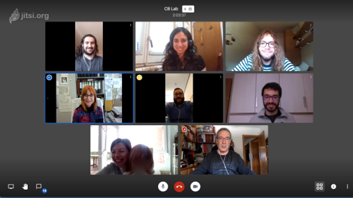
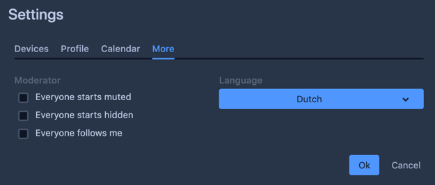
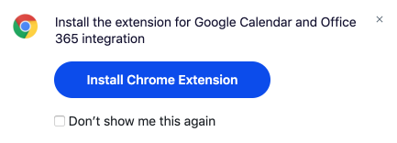
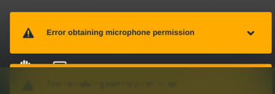

Indien je geen paswoord instelt kan iedereen ter wereld het videogesprek bijwonen. Het is alsof de virtuele voordeur openstaat en iedereen plots in een gesprek kan inspringen.
Dit kan soms verschieten zijn, dus we raden sterk aan om een paswoord in te stellen (ook voor privacy redenen kan dit noodzakelijk zijn).
De eerste persoon die het kanaal opstart kan een paswoord toe voegen door:
Ja, de eerste persoon (laptop / computer) die het videogesprek aangemaakt heeft kan een paswoord verwijderen door te klikken op “remove password”.
Minstens 8 karakters, liefst een mix van letters en cijfers. Nog sterker is om een leesteken toe te voegen, maar dat is niet noodzakelijk.
Door slim om te gaan met het laatste keuzewoord, kan je zelf een schema opstellen wanneer welke bewoner een babbelbox contactmoment heeft met enkel zijn/haar familie.
Voorbeeld: Eerste woord: naam van je WZC
Tweede woord: gemeente of iets anders
Derde woord: dit kies je op voorhand voor elke bewoner.
Je spreekt dan bijvoorbeeld een schema af
14:00 Bewoner Anna, derde woord is kip
14:30 Bewoner Bert, derde woord is kat
Bij het openen van het videogesprek vraagt je internetbrowser om toegang tot je microfoon
en
camera. Druk hier steeds op toestaan (allow). Het popupvenster dat je hiervoor te zien
krijgt
ziet er verschillend uit afhankelijk van je internet browser of besturingssysteem.
Enkele voorbeelden:
Indien het niet lukt, probeer dan een andere internetbrowser om het videogesprek te
openen.
Google Chrome geeft (doorgaans) het
minste
problemen en kan je downloaden via https://www.google.com/intl/nl/chrome/
De Safari browser (standaard op Apple producten) wordt afgeraden.
De verschillende beelden komen dan naast en onder elkaar te staan:
Klik op “Settings” (instellingen), vervolgens op “More” (meer) en in het Language (taal) menu kan je bijvoorbeeld “Dutch”(nederlands) (of een andere taal) selecteren. Klik op OK.
Verlaag de kwaliteit van de video.
Bij laptop of computer met echt toetsenbord: Druk op A en verlaag de kwaliteit tot lage resolutie.
Bij mobiele toestellen: druk op de 3 puntjes, kies voor modus “Alleen audio” inschakelen (dan is er geen video voor deze mobiele deelnemer).
De app “Jitsi Meet” heeft op Apple iPad of iPhone toestellen minimum iOS 11.0 of hoger nodig: https://itunes.apple.com/us/app/jitsi-meet/id1165103905.
op Android toestellen heeft de app minimum Android 5.0 of hoger nodig. https://play.google.com/store/apps/details?id=org.jitsi.meet.
Op een gewone laptop of PC gebruik je best een recente versie van Google Chrome.
Klik op het vakje naast “Don’t show me this again” en vervolgens op het kruisje rechts boven. Dit hoef je niet te installeren.
Klik op het slotje naast de url “praatbox.be” en kies voor zowel de microfoon als camera voor toestaan. Klik op het kruisje om de popup te sluiten. Klik op “opnieuw laden”.
